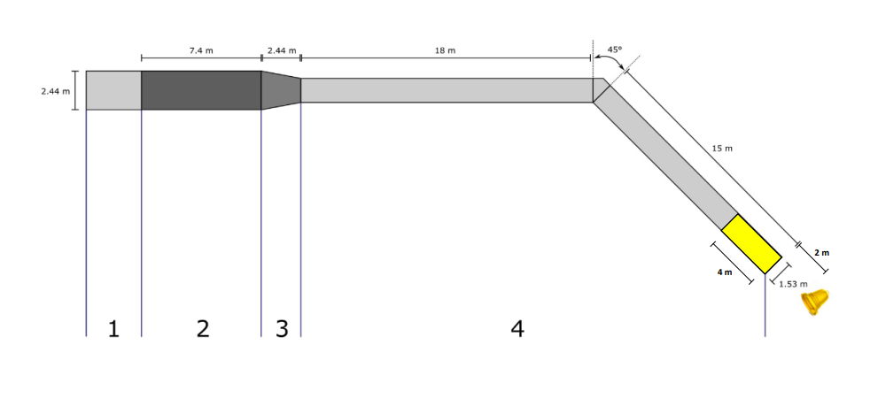

Zaterdag
2 september
Zaterdag gaan we door met het originele idee, gebaseerd op het bekende TROS-programma “TER LAND, TER ZEE EN IN DE LUCHT”, waarbij de deelnemers met een zelf in elkaar geknutselde tobbe van een schans naar beneden rijden en zo snel mogelijk de bel proberen te bereiken.
Vele jaren werden de deelnemers nog gescheiden van de bel door een obstakel, maar dit jaar grijpen we een laatste keer terug naar het concept van vorig jaar. Aan de start worden de deelnemers naar beneden geduwd om met een degelijke snelheid van de schans (met een helling van ± 20°) te razen. Die schans versmalt op het einde van 2.5m naar 1.5m. Vanaf deze schans komt de tobbe niet meteen op het water (zie onderstaande foto) maar op een ponton. Eenmaal op het ponton is het de bedoeling om op het einde binnen de aangeduide zone te remmen zodat de tobbe in de zone staat. Eenmaal de tobbe binnen de zone staat springen de deelnemers zo snel mogelijk naar de bel (2 meter) om prachtige prijzen binnen te halen. Vergeet zeker niet om het reglement er eens op na te lezen, hierin is duidelijk uitgelegd wat wel en niet mag.
Inspiratie nodig? Kijk hier hoe het moet:
Zaterdag na de prijsuitreiking gaan we door met een tweede spetterend feestje. Dit wordt op gang getrokken door Cover-line, waarna THE JULIETS (gekend van de Vlinvestifal, Septemberfeesten, Stressfactor…) het feest compleet zullen maken na het vuurwerk.
Hierna zetten we het feest verder met MNM Start To DJ winnaar TOLAG OG en Sven Van Alboom (gekend van Tomorrowland ,Sunrise Festival, Ostend Beach,…). Vervolgens zal het vertrouwde duo Sïmplex overnemen waarna Employerz Tobbedansen 2023 tot een mooi einde zal brengen.
Schrijf 2 september 2023 dus in jullie agenda, wij kijken alvast uit naar jullie originele constructies en het feestje achteraf, jullie hopelijk ook.
Tot dan!